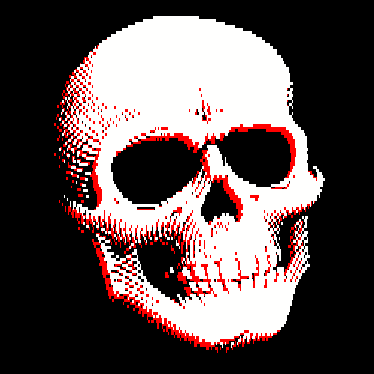

TCA is a blog dealing with themes such as consciousness, AGI, our history as a species, the effects of technological progress on modern society and philosophy of the mind.
Writings
A list of essays and short stories:
Non-Fiction:
Exercise in futility, Essay on the themes of consciousness and the unconscious mind, how they rule our lives and colour every experience without our say, 2021
The Loop of Life and the God-Machine, An essay about a thought experiment on the meaning of human suffering and the reasons to go on , 2021
The Soup of Time, Musings on the passage of time and our inability to cope with it, 2022
1-35 kilos of existence, Write-up on the source of our existence and the problem of certainty, 2022
Born in Dissonance , An ode to the mightiest of the music genres, extreme metal, 2022
Man’s Search for Metagnosis , Write-up on the battleground that is faith, 2022
To those we love , To those, we love…, 2022
Cave of our origins , Write-up on the penumbra that surrounds us and the possibility's of exiting it, 2022
The Death of Silence , Write-up on the effects of living in modern enviroment without silence, 2022
Diagnosed with “Terminally Online” , Essay about the effects of perpetual internet usage and subsequent consequences. 2022
A glitch in the matrix and the death of positive vibes , Old Man Yells at Cloud style rant. 2022
Fiction:

Well of Anaïs , A short story based on the as Camus put it:the only truly serious philosophical problem - suicide, 2022